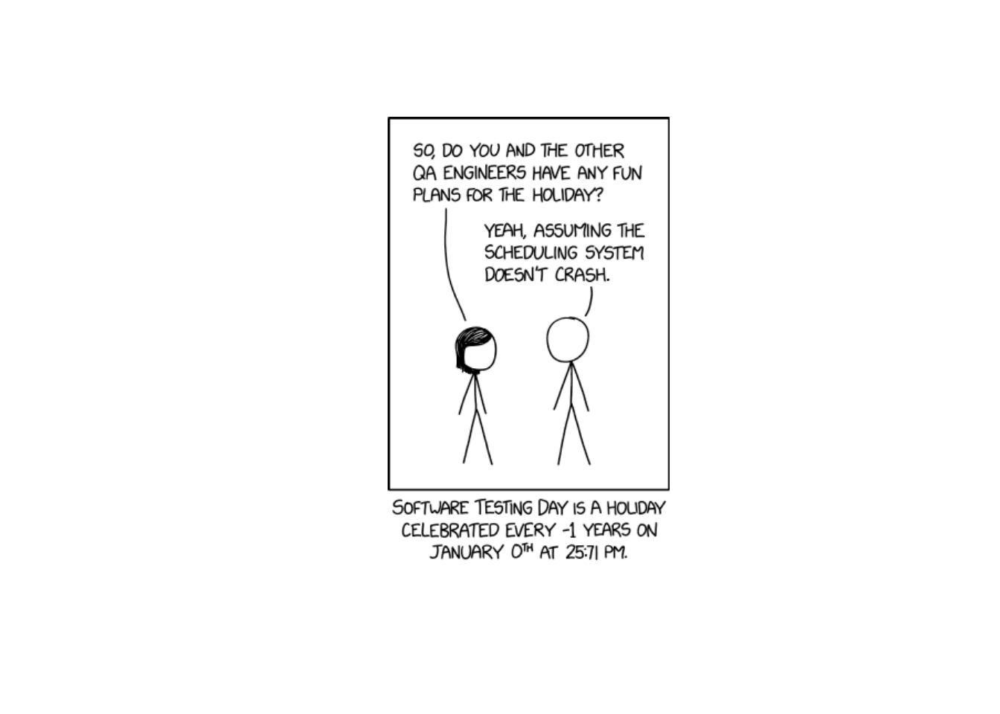
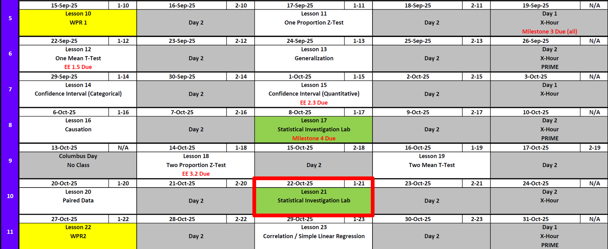
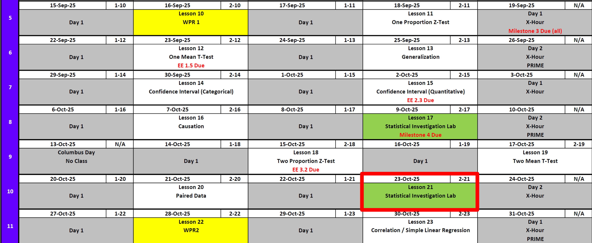
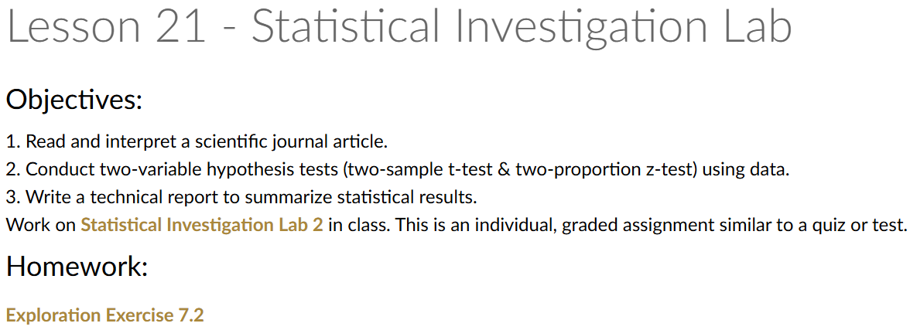

Lesson 21: Statistical Investigation Lab
In honor of Thayer Time
Lesson Administration
Calendar
Day 1

Day 2


SIL 1
Exploration Exercise 7.2
EE7.2 due 0700 23 Oct
SIL 2
- Today is SIL 2
WPR 2
- Next Lesson
Resources
To Help Prepare
Exploration Exercise 2.3
Exploration Exercise 3.2
Board Problems on each lesson, 11-20
Coursewide review to be published in the coming days
For WPR
- 8x11 Note Sheet written by you front and back
- Course Guide
- Calculator
- R/RStudio
- Pen/Pencil
- Positive Can Do Attitude
- Water / Caffeine
- No AI, no outside internet, no buddies, no website
Math 1 vs EECS
Previously 6-0
7-0
Running Review
Review: \(z\)-Tests for One Proportion
For all cases:
\(H_0:\ \pi = \pi_0\)
\[ z = \frac{\hat{p} - \pi_0}{\sqrt{\frac{\hat{p}\,(1-\hat{p})}{n}}} \]
| Alternative Hypothesis | Formula for \(p\)-value | R Code |
|---|---|---|
| \(H_A:\ \pi > \pi_0\) | \(p = 1 - \Phi(z)\) | p_val <- 1 - pnorm(z_stat) |
| \(H_A:\ \pi < \pi_0\) | \(p = \Phi(z)\) | p_val <- pnorm(z_stat) |
| \(H_A:\ \pi \neq \pi_0\) | \(p = 2 \cdot (1 - \Phi(|z|))\) | p_val <- 2 * (1 - pnorm(abs(z_stat))) |
Where:
- \(\hat{p} = R/n\) (sample proportion)
- \(\pi_0\) = hypothesized proportion under \(H_0\)
- \(\Phi(\cdot)\) = cumulative distribution function (CDF) of the standard normal distribution
Confidence Interval for \(\pi\) (one proportion)
\[ \hat{p} \;\pm\; z_{\,1-\alpha/2}\,\sqrt{\frac{\hat{p}\,(1-\hat{p})}{n}} \]
I am \((1 - \alpha)\%\) confident that the true population proportion \(\pi\) lies between \([\text{lower bound}, \text{upper bound}]\).
Review: \(t\)-Tests for One Mean
For all cases:
\(H_0:\ \mu = \mu_0\)
\[ t = \frac{\bar{x} - \mu_0}{s / \sqrt{n}} \]
| Alternative Hypothesis | Formula for \(p\)-value | R Code |
|---|---|---|
| \(H_A:\ \mu > \mu_0\) | \(p = 1 - F_{t,df}(t)\) | p_val <- 1 - pt(t_stat, df) |
| \(H_A:\ \mu < \mu_0\) | \(p = F_{t,df}(t)\) | p_val <- pt(t_stat, df) |
| \(H_A:\ \mu \neq \mu_0\) | \(p = 2 \cdot (1 - F_{t,df}(|t|))\) | p_val <- 2 * (1 - pt(abs(t_stat), df)) |
Where:
- \(\bar{x}\) = sample mean
- \(\mu_0\) = hypothesized mean under \(H_0\)
- \(s\) = sample standard deviation
- \(n\) = sample size
- \(df = n - 1\) (degrees of freedom)
- \(F_{t,df}(\cdot)\) = CDF of Student’s \(t\) distribution with \(df\) degrees of freedom
Confidence Interval for \(\mu\) (one mean)
\[ \bar{x} \;\pm\; t_{\,1-\alpha/2,\;df}\,\frac{s}{\sqrt{n}}, \qquad df = n-1 \] I am \((1 - \alpha)\%\) confident that the true population mean \((\mu)\) lies between \([\text{lower bound}, \text{upper bound}]\).
Review: \(z\)-Tests for Two Proportions
For all cases:
\(H_0:\ \pi_1 - \pi_2 = 0\)
\[ z \;=\; \frac{(\hat{p}_1 - \hat{p}_2) - (\pi_1 - \pi_2)}{\sqrt{\hat{p}(1-\hat{p})\left(\tfrac{1}{n_1} + \tfrac{1}{n_2}\right)}} \]
Where the pooled proportion is
\[ \hat{p} \;=\; \frac{x_1 + x_2}{n_1 + n_2}. \]
| Alternative Hypothesis | Formula for \(p\)-value | R Code |
|---|---|---|
| \(H_A:\ \pi_1 - \pi_2 > 0\) | \(p = 1 - \Phi(z)\) | p_val <- 1 - pnorm(z_stat) |
| \(H_A:\ \pi_1 - \pi_2 < 0\) | \(p = \Phi(z)\) | p_val <- pnorm(z_stat) |
| \(H_A:\ \pi_1 - \pi_2 \neq 0\) | \(p = 2 \cdot (1 - \Phi(|z|))\) | p_val <- 2 * (1 - pnorm(abs(z_stat))) |
Where:
- \(\hat{p}_1 = x_1/n_1\) (sample proportion in group 1)
- \(\hat{p}_2 = x_2/n_2\) (sample proportion in group 2)
- \(\pi_1, \pi_2\) = hypothesized proportions under \(H_0\)
- \(\Phi(\cdot)\) = cumulative distribution function (CDF) of the standard normal distribution
Confidence Interval for \(\pi_1 - \pi_2\) (unpooled SE)
\[ (\hat{p}_1 - \hat{p}_2) \;\pm\; z_{\,1-\alpha/2}\, \sqrt{\tfrac{\hat{p}_1(1-\hat{p}_1)}{n_1} + \tfrac{\hat{p}_2(1-\hat{p}_2)}{n_2}} \]
I am \((1 - \alpha)\%\) confident that the true difference in population proportions \((\pi_1 - \pi_2)\) lies between \([\text{lower bound}, \text{upper bound}]\).
Review: \(t\)-Tests for Two Means
For all cases:
\(H_0:\ \mu_1 - \mu_2 = 0\)
\[ t = \frac{(\bar{x}_1 - \bar{x}_2) - 0}{\sqrt{\tfrac{s_1^2}{n_1} + \tfrac{s_2^2}{n_2}}} \]
| Alternative Hypothesis | Formula for \(p\)-value | R Code |
|---|---|---|
| \(H_A:\ \mu_1 - \mu_2 > 0\) | \(p = 1 - F_{t,df}(t)\) | p_val <- 1 - pt(t_stat, df) |
| \(H_A:\ \mu_1 - \mu_2 < 0\) | \(p = F_{t,df}(t)\) | p_val <- pt(t_stat, df) |
| \(H_A:\ \mu_1 - \mu_2 \neq 0\) | \(p = 2 \cdot (1 - F_{t,df}(|t|))\) | p_val <- 2 * (1 - pt(abs(t_stat), df)) |
Where:
- \(\bar{x}_1,\ \bar{x}_2\) = sample means in groups 1 and 2
- \(s_1,\ s_2\) = sample standard deviations
- \(n_1,\ n_2\) = sample sizes
- \(df = n_1 + n_2 - 2\)
- \(F_{t,df}(\cdot)\) = CDF of Student’s \(t\) distribution with \(df\) degrees of freedom
Confidence Interval for \(\mu_1 - \mu_2\)
\[ (\bar{x}_1 - \bar{x}_2) \;\pm\; t_{\,1-\alpha/2,\;df}\, \sqrt{\tfrac{s_1^2}{n_1} + \tfrac{s_2^2}{n_2}}, \qquad df = n_1+n_2-2 \]
I am \((1 - \alpha)\%\) confident that the true difference in population means \((\mu_1 - \mu_2)\) lies between \([\text{lower bound}, \text{upper bound}]\).
Review: Paired \(t\)-Tests
For all cases:
\(H_0:\ \mu_d = 0\)
(where \(d = \text{Before – After}\) is the difference within each pair)
\[ t = \frac{\bar{d} - 0}{s_d / \sqrt{n}} \]
| Alternative Hypothesis | Formula for \(p\)-value | R Code |
|---|---|---|
| \(H_A:\ \mu_d > 0\) | \(p = 1 - F_{t,df}(t)\) | p_val <- 1 - pt(t_stat, df) |
| \(H_A:\ \mu_d < 0\) | \(p = F_{t,df}(t)\) | p_val <- pt(t_stat, df) |
| \(H_A:\ \mu_d \neq 0\) | \(p = 2 \cdot (1 - F_{t,df}(|t|))\) | p_val <- 2 * (1 - pt(abs(t_stat), df)) |
Where:
- \(\bar{d}\) = mean of the paired differences
- \(s_d\) = standard deviation of the paired differences
- \(n\) = number of pairs
- \(df = n - 1\) (degrees of freedom)
- \(F_{t,df}(\cdot)\) = CDF of Student’s \(t\) distribution with \(df\) degrees of freedom
Confidence Interval for \(\mu_d\) (paired mean difference)
\[ \bar{d} \;\pm\; t_{\,1-\alpha/2,\;df}\,\frac{s_d}{\sqrt{n}}, \qquad df = n-1 \]
I am \((1 - \alpha)\%\) confident that the true mean difference in the population \((\mu_d)\) lies between \([\text{lower bound}, \text{upper bound}]\).
Interpreting the \(p\)-value
Rejecting \(H_0\)
> Since the \(p\)-value is less than \(\alpha\) (e.g., \(0.05\)), we reject the null hypothesis.
> We conclude that there is sufficient evidence to suggest that [state the alternative claim in context].Failing to Reject \(H_0\)
> Since the \(p\)-value is greater than \(\alpha\) (e.g., \(0.05\)), we fail to reject the null hypothesis.
> We conclude that there is not sufficient evidence to suggest that [state the alternative claim in context].Strength of evidence: Smaller \(p\) means stronger evidence against \(H_0\).
Generalization / Causation
- Generalization: We can generalize results to a larger population if the data come from a random and representative sample of that population.
- Causation: We can claim causation if participants are randomly assigned to treatments in an experiment. Without random assignment, we can only conclude association, not causation.
\[ \begin{array}{|c|c|c|} \hline & \text{Randomly Sampled} & \text{Not Randomly Sampled} \\ \hline \textbf{Randomly Assigned} & \begin{array}{c} \text{Generalize: Yes} \\ \text{Causation: Yes} \end{array} & \begin{array}{c} \text{Generalize: No} \\ \text{Causation: Yes} \end{array} \\ \hline \textbf{Not Randomly Assigned} & \begin{array}{c} \text{Generalize: Yes} \\ \text{Causation: No} \end{array} & \begin{array}{c} \text{Generalize: No} \\ \text{Causation: No} \end{array} \\ \hline \end{array} \]
Parameters vs Statistics
- Parameters vs. Statistics: A parameter is a fixed (but usually unknown) numerical value describing a population (e.g., \(\mu\), \(\sigma\), \(\pi\)). A statistic is a numerical value computed from a sample (e.g., \(\bar{x}\), \(s\), \(\hat{p}\)).
- Parameters = target (what we want to know).
- Statistics = evidence (what we can actually measure).
- We use statistics to estimate parameters, and because different samples give different statistics, we capture this variability with confidence intervals.
- Parameters = target (what we want to know).
Validity Conditions
- Proportions
- Independence / Randomness: data come from a random sample (or are representative of the population). For two-sample tests, groups are independent.
- Success–Failure Condition: each proportion must have at least
- \(n\hat{p} \geq 10\) (expected successes)
- \(n(1 - \hat{p}) \geq 10\) (expected failures)
- \(n\hat{p} \geq 10\) (expected successes)
- Independence / Randomness: data come from a random sample (or are representative of the population). For two-sample tests, groups are independent.
- Means
- Independence / Randomness: data come from a random sample (or are representative of the population). For two-sample tests, groups (or paired differences) are independent.
- Sample Size / Shape:
- Data should be approximately normally distributed when \(n > 20\).
- If \(n \leq 20\): distribution should be roughly symmetric with no extreme skew or outliers.
- For paired tests: check the distribution of the differences.
- Data should be approximately normally distributed when \(n > 20\).
- Independence / Randomness: data come from a random sample (or are representative of the population). For two-sample tests, groups (or paired differences) are independent.
Margin of Error
It is the half-width of the confidence interval — the distance from the sample statistic to either endpoint of the interval.
So a confidence interval can always be written as:
\[ \text{Sample Statistic} \; \pm \; \text{Margin of Error}. \]
For example, for a population mean the confidence interval is:
\[ \bar{x} \; \pm \; t_{\alpha/2, \; df} \times \frac{s}{\sqrt{n}}. \]
The margin of error is:
\[ t_{\alpha/2, \; df} \times \frac{s}{\sqrt{n}} \]
For a population proportion the confidence interval is:
\[ \hat{p} \; \pm \; z_{\alpha/2} \times \sqrt{\frac{\hat{p}(1 - \hat{p})}{n}}. \]
The margin of error is:
\[ z_{\alpha/2} \times \sqrt{\frac{\hat{p}(1 - \hat{p})}{n}} \]
Class Review
Group Activity
| Component | 1-Sample Mean | 2-Sample Mean | Paired Mean | 1-Sample Prop | 2-Sample Prop |
|---|---|---|---|---|---|
| Null (H0) | |||||
| Alt > Alt < Alt = |
|||||
| Test Stat | |||||
| p-value > p-value > p-value = |
|||||
| CI Formula |
Scenarios
- A nutritionist wonders if teenagers consume more sodium than the recommended 2,300 mg per day.
She collects data from 40 teens across several high schools in her state. The teens self-reported their daily intake, averaging 2,450 mg per day with a standard deviation of 400 mg. Many of the students were also athletes, which could influence dietary choices.
- Nationwide surveys suggest about 62% of adults own a smartphone.
In a phone survey of 150 adults from one midsized city, 105 reported owning a smartphone. The city has a relatively young population compared to the national average, which could affect the results.
- A school district wants to know whether male and female students spend different amounts of time on homework each week.
- In a sample of 35 male students, the average reported time was 12.4 hours with a standard deviation of 4.2 hours.
- In a sample of 40 female students, the average was 14.1 hours with a standard deviation of 3.9 hours.
All students were enrolled in honors-level courses, which may influence homework expectations.
- A company is comparing two training programs to see if one produces higher certification pass rates.
- Of the 60 employees enrolled in Program A, 48 passed the exam.
- Of the 55 employees in Program B, 38 passed the exam.
Supervisors assigned employees to the training programs based on their work schedules, and employees in Program A tended to have more prior experience with the material.
- A researcher measures the resting heart rates of 25 participants before and after an 8-week aerobic training program.
On average, heart rates were 5.2 beats per minute lower after training, with the differences across participants having a standard deviation of 7.5 bpm. Some participants also reported starting new diets at the same time as the training program.
Questions
What is the research question?
Are the variables categorical or quantitative? What type of test are you completing?
What is the response variable and what is the explanatory variable in this study?
Is there a potential confounding variable? If so, what might it be?
Describe the parameter of interest in context of the question.
State the null and alternative hypotheses in both symbols and words.
List the appropriate summary statistic(s) by name, symbol, and value.
State the appropriate validity conditions and whether they are met.
Report the standardized statistic, the p-value, and a confidence interval.
Based on an α = 0.05 significance level, do you reject or fail to reject the null? Provide your evidence.
Can the results of this study be generalized to a larger population? Why or why not?
Can we assume a causal relationship from these results? Why or why not?
Solutions
Scenario 1
A nutritionist wonders if teenagers consume more sodium than the recommended 2,300 mg per day.
She collects data from 40 teens across several high schools in her state. The teens self-reported their daily intake, averaging 2,450 mg per day with a standard deviation of 400 mg. Many of the students were also athletes, which could influence dietary choices.
Research Question
Do teenagers consume more sodium on average than the recommended 2,300 mg per day?Variables & Test
Quantitative (sodium intake). One-sample t-test for a mean.Response & Explanatory
Response = sodium intake (mg/day).
Explanatory = comparison to recommended guideline.Confounding Variable
Athletic status (athletes may consume more sodium).Parameter of Interest
µ = true mean sodium intake of all teenagers.Hypotheses
H₀: µ = 2300
Hₐ: µ > 2300Summary Statistics
n = 40, x̄ = 2450, s = 400.Validity Conditions
Sample size \(n = 40\) is larger than 20, so the mean intake can be reasonably modeled with a t-test.Test Statistic & CI
Test statistic:
\[ t = \frac{\bar{x} - \mu_0}{s / \sqrt{n}} \]
xbar <- 2450
mu0 <- 2300
s <- 400
n <- 40
t_stat <- (xbar - mu0) / (s / sqrt(n))
t_statp-value (right-tailed):
df <- n - 1
p_value <- 1 - pt(t_stat, df)
p_value95% CI:
alpha <- 0.05
t_star <- qt(1 - alpha/2, df)
ME <- t_star * s / sqrt(n)
lower <- xbar - ME
upper <- xbar + ME
c(lower, upper)Result: \(t \approx 2.37\), \(p \approx 0.011\).
I am 95% confident the true mean sodium intake is between 2346 and 2554 mg/day.
Decision at α = 0.05
Reject H₀. We conclude it is possible that the true mean sodium intake of teenagers is greater than 2300 mg per day. In context, this suggests teens in the study tend to consume more sodium than recommended.Generalization
Sample from one state → cannot generalize to all U.S. teens.Causality
Observational design → cannot infer causality.
Scenario 2
Nationwide surveys suggest about 62% of adults own a smartphone.
In a phone survey of 150 adults from one midsized city, 105 reported owning a smartphone. The city has a relatively young population compared to the national average, which could affect the results.
Research Question
Is the proportion of smartphone ownership in this city different from 62%?Variables & Test
Categorical (own smartphone or not). One-sample z-test for a proportion.Response & Explanatory
Response = smartphone ownership (yes/no).
Explanatory = national benchmark proportion (\(p_0 = 0.62\)).Confounding Variable
Age distribution of the city (younger population may have higher ownership).Parameter of Interest
\(p =\) true proportion of adults in this city who own a smartphone.Hypotheses
\(H_0: p = 0.62\)
\(H_a: p \ne 0.62\)Summary Statistics
\(n = 150,\; x = 105,\; \hat{p} = 105/150 = 0.70\)Validity Conditions
Success–failure condition holds: \(n\hat{p} = 105 \geq 10\) and \(n(1-\hat{p}) = 45 \geq 10\). Random/representative sample assumed.Test Statistic, p-value, and 95% CI
Formulas
- Test statistic: \(z = \dfrac{\hat{p} - p_0}{\sqrt{p_0(1-p_0)/n}}\)
- Two-sided p-value: \(2 \,[1-\Phi(|z|)]\)
- 95% CI: \(\hat{p} \pm z_{\alpha/2} \sqrt{\dfrac{\hat{p}(1-\hat{p})}{n}}\) with \(z_{0.025} \approx 1.96\)
R code (template)
# Given data
n <- 150
x <- 105
p.hat <- x / n
p0 <- 0.62
# Test statistic & p-value (two-sided)
se0 <- sqrt(p0*(1 - p0)/n)
z <- (p.hat - p0) / se0
p.value <- 2 * (1 - pnorm(abs(z)))
z; p.value# 95% confidence interval for p
alpha <- 0.05
z.star <- qnorm(1 - alpha/2)
se.hat <- sqrt(p.hat*(1 - p.hat)/n)
ME <- z.star * se.hat
lower <- p.hat - ME
upper <- p.hat + ME
c(lower, upper)Numerical results
\(z \approx 2.02\), two-sided \(p \approx 0.044\).
95% CI: I am 95% confident that the true proportion of adults in this city who own a smartphone is between 0.627 and 0.773.
Decision at \(\alpha = 0.05\)
Reject \(H_0\). We conclude it is possible that the true proportion is not equal to 0.62. In context, smartphone ownership in this city likely differs from the national rate.Generalization
This is one midsized city; generalization to all U.S. adults is limited without broader sampling.Causality
This is a survey (no random assignment), so we cannot infer a causal explanation for differences in ownership.
Scenario 3
A school district wants to know whether male and female students spend different amounts of time on homework each week.
- 35 male students: \(\bar{x}_1 = 12.4\) hours, \(s_1 = 4.2\)
- 40 female students: \(\bar{x}_2 = 14.1\) hours, \(s_2 = 3.9\)
All students were in honors-level courses, which may influence homework expectations.
Research Question
Do male and female students differ in average weekly homework hours?Variables & Test
Quantitative response (hours), categorical explanatory (gender). Two-sample t-test for means.Response & Explanatory
Response = hours of homework.
Explanatory = gender (male vs female).Confounding Variable
Honors course enrollment.Parameter of Interest
\(\mu_2 - \mu_1 =\) difference in true mean hours (female − male).Hypotheses
\(H_0: \mu_2 - \mu_1 = 0\)
\(H_a: \mu_2 - \mu_1 \ne 0\)Summary Statistics
\(n_1 = 35, \; \bar{x}_1 = 12.4, \; s_1 = 4.2\)
\(n_2 = 40, \; \bar{x}_2 = 14.1, \; s_2 = 3.9\)Validity Conditions
Both groups have \(n > 20\), so approximate normality is reasonable.Test Statistic, p-value, and 95% CI
Formulas
- Pooled variance:
\[ s_p^2 = \frac{(n_1 - 1)s_1^2 + (n_2 - 1)s_2^2}{n_1 + n_2 - 2} \]
Standard error:
\[ SE = \sqrt{s_p^2 \left( \frac{1}{n_1} + \frac{1}{n_2} \right)} \]Test statistic:
\[ t = \frac{(\bar{x}_2 - \bar{x}_1) - 0}{SE} \]Degrees of freedom:
\[ df = n_1 + n_2 - 2 \]Confidence interval:
\[ (\bar{x}_2 - \bar{x}_1) \;\pm\; t_{\alpha/2, df} \times SE \]
R code (template)
# Given data
n1 <- 35; xbar1 <- 12.4; s1 <- 4.2
n2 <- 40; xbar2 <- 14.1; s2 <- 3.9
# Pooled variance and standard deviation
sp2 <- ((n1 - 1)*s1^2 + (n2 - 1)*s2^2) / (n1 + n2 - 2)
sp <- sqrt(sp2)
# Standard error
SE <- sp * sqrt(1/n1 + 1/n2)
# Difference in means
diff <- xbar2 - xbar1
# Test statistic and df
t_stat <- diff / SE
df <- n1 + n2 - 2
# Two-sided p-value
p_value <- 2 * (1 - pt(abs(t_stat), df))
# 95% CI
alpha <- 0.05
t_star <- qt(1 - alpha/2, df)
lower <- diff - t_star * SE
upper <- diff + t_star * SE
t_stat; p_value; c(lower, upper)Numerical results
\(t \approx 1.87\) (female − male), \(p \approx 0.066\), with \(df = 73\).
95% CI: I am 95% confident that the true difference in mean homework hours (female − male) is between −3.5 and 0.2 hours.
Decision at \(\alpha = 0.05\)
Fail to reject \(H_0\). It is possible that the true difference in mean homework hours is 0. In context, this means there may be no real difference in homework time between male and female students.Generalization
Sample only from honors students in a limited number of schools → generalization is limited.Causality
Observational data; cannot infer causality.
Scenario 4
A company is comparing two training programs to see if one produces higher certification pass rates.
- Program A: 60 employees, 48 passed.
- Program B: 55 employees, 38 passed.
Supervisors assigned employees to programs based on schedules; Program A employees had more prior experience.
Research Question
Do pass rates differ between Program A and Program B?Variables & Test
Categorical response (pass/fail), categorical explanatory (program). Two-sample \(z\)-test for proportions.Response & Explanatory
Response = pass/fail.
Explanatory = training program (A vs B).Confounding Variable
Prior experience with the certification material.Parameter of Interest
\(p_1 - p_2 =\) difference in true pass rates (Program A \(-\) Program B).Hypotheses
\(H_0: p_1 - p_2 = 0\)
\(H_a: p_1 - p_2 \ne 0\)Summary Statistics
\(n_1 = 60,\; x_1 = 48,\; \hat p_1 = 0.80\)
\(n_2 = 55,\; x_2 = 38,\; \hat p_2 \approx 0.6909\)
Observed difference: \(\hat p_1 - \hat p_2 \approx 0.1091\).Validity Conditions
Each group has at least 10 successes and 10 failures:
- Program A: successes \(=48\), failures \(=12\)
- Program B: successes \(=38\), failures \(=17\)
Conditions met; groups treated as independent.
- Test Statistic, p-value, and 95% CI
Formulas
- Pooled proportion (for the test): \(\hat p_{pool} = \dfrac{x_1 + x_2}{n_1 + n_2}\)
- Test statistic:
\[ z = \frac{(\hat p_1 - \hat p_2) - 0}{\sqrt{\hat p_{pool}(1-\hat p_{pool})\left(\frac{1}{n_1} + \frac{1}{n_2}\right)}} \] - Two-sided p-value: \(2\,[1-\Phi(|z|)]\) - 95% CI (unpooled SE):
\[ (\hat p_1 - \hat p_2) \;\pm\; z_{\alpha/2}\,\sqrt{\frac{\hat p_1(1-\hat p_1)}{n_1} + \frac{\hat p_2(1-\hat p_2)}{n_2}} \]
R code (template)
# Data
n1 <- 60; x1 <- 48; p1.hat <- x1 / n1
n2 <- 55; x2 <- 38; p2.hat <- x2 / n2
# Pooled for H0
p.pool <- (x1 + x2) / (n1 + n2)
SE0 <- sqrt(p.pool * (1 - p.pool) * (1/n1 + 1/n2))
# Test statistic & two-sided p-value
z <- (p1.hat - p2.hat) / SE0
p.value <- 2 * (1 - pnorm(abs(z)))
z; p.value# 95% CI for (p1 - p2) using unpooled SE
alpha <- 0.05
z.star <- qnorm(1 - alpha/2)
SE.hat <- sqrt(p1.hat*(1 - p1.hat)/n1 + p2.hat*(1 - p2.hat)/n2)
ME <- z.star * SE.hat
lower <- (p1.hat - p2.hat) - ME
upper <- (p1.hat - p2.hat) + ME
c(lower, upper)Numerical results
\(z \approx 1.35\), two-sided \(p \approx 0.178\).
95% CI: I am 95% confident that the true difference in pass rates (Program A \(-\) Program B) is somewhere between \(-0.050\) and \(0.268\).
Decision at \(\alpha = 0.05\)
Fail to reject \(H_0\). It is possible that the true difference in pass rates is \(0\) (no difference between Program A and Program B). In context, the programs may perform similarly based on this sample.Generalization
This is one company’s workforce; generalization beyond similar employees is limited.Causality
Assignment was not randomized (schedules/prior experience differ), so we cannot make a causal claim that one program causes higher pass rates.
Scenario 5
A researcher measures the resting heart rates of 25 participants before and after an 8-week aerobic training program.
Mean decrease (Before − After) \(=\;5.2\) bpm, standard deviation of differences \(s_d = 7.5\) bpm. Some participants also started new diets.
Research Question
Does the training program reduce average resting heart rate?Variables & Test
Quantitative paired differences (before/after on the same people). Paired t-test for a mean difference.Response & Explanatory
Response = resting heart rate.
Explanatory = time (before vs after program) on the same participants.Confounding Variable
Diet changes begun during the program.Parameter of Interest
\(\mu_d =\) true mean difference in resting heart rate (Before − After).Hypotheses
\(H_0: \mu_d = 0\)
\(H_a: \mu_d > 0\) (a positive mean difference indicates a decrease after training)Summary Statistics
\(n = 25,\;\; \bar{d} = 5.2,\;\; s_d = 7.5\)Validity Conditions
Pairs are matched by person; differences are the unit of analysis. With \(n=25\,(>20)\) the paired t-procedure is reasonable; we assume the distribution of differences is approximately normal and pairs are independent of each other.Test Statistic, p-value, and 95% CI
Formulas
- Test statistic:
\[ t = \frac{\bar{d} - 0}{s_d/\sqrt{n}} \] - Right-tailed p-value: \(1 - T_{df}(t)\) with \(df = n - 1\)
- 95% CI for \(\mu_d\):
\[ \bar{d} \;\pm\; t_{\alpha/2,\,df}\;\frac{s_d}{\sqrt{n}}, \quad df=n-1 \]
R code (template)
# Given data
n <- 25
dbar <- 5.2
sd_d <- 7.5
mu0 <- 0
# Test statistic & right-tailed p-value
t_stat <- (dbar - mu0) / (sd_d / sqrt(n))
df <- n - 1
p_value <- 1 - pt(t_stat, df)
t_stat; p_value# 95% CI for mean difference
alpha <- 0.05
t_star <- qt(1 - alpha/2, df)
ME <- t_star * sd_d / sqrt(n)
lower <- dbar - ME
upper <- dbar + ME
c(lower, upper) # I am 95% confident the true mean decrease is between lower and upperNumerical results
\(t \approx 3.47\), right-tailed \(p \approx 0.001\).
95% CI: I am 95% confident that the true mean decrease in resting heart rate is somewhere between \(2.2\) and \(8.2\) bpm.
Decision at \(\alpha = 0.05\)
Reject \(H_0\). We conclude it is possible that the true mean decrease in resting heart rate is greater than \(0\). In context, this suggests the training program may lower resting heart rates.Generalization
Volunteer sample from a single program; generalization to all adults is limited without broader sampling.Causality
No random assignment and concurrent diet changes; we cannot make a causal claim that the program alone caused the reduction.
Before you leave
Today:
- Any questions for me?
Upcoming Graded Events
- WPR 2: Lesson 22